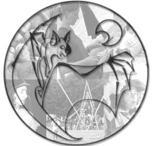

200e FOS De Vleermuis
- Adres
200e FOS De Vleermuis
Nijverheidsstraat 4
9890 Dikkelvenne
Oost-Vlaanderen (België)
rekeningnummer 290-0140145-01
eenheidsleider: Pieter Schepens (**/***.**.**)
- Site & mailinglist
Met commentaar, tips of verbeteringen kan je terecht bij webmaster Frederik.
Wil je op de hoogte blijven van de laatste nieuwtjes, schrijf je dan in op onze mailinglist.
- Secretariaat

Om alles vlot te laten verlopen, hebben wij alle betalingen gecentraliseerd en samengebracht in ons secretariaat in het lokaal. De verantwoordelijke zorgt er daar voor dat je je voor de juiste activiteiten kan inschrijven en dat het geld in de juiste kas terecht komt. Alle inschrijvingen voor weekends, dagactiviteiten, kampen, eenheidsweekend, enz... kan je in het secretariaat en enkel daar verrichten. Aan de leiding hoef je en kan je dus niets betalen.
- Shop
In ons lokaal kan je in de shop terecht voor alles wat met het uniform te maken heeft: hemd, das, kentekens, T-shirt, Mowgli en Teervoetboekjes. De shop is open elke zaterdag van 16u45 tot 17u15.